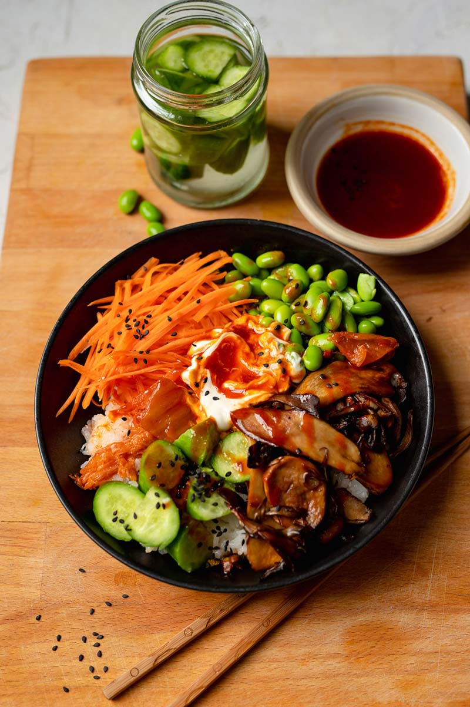

Bibimbap
Bibimbap is a Korean rice dish that typically features mixed rice with meat and assorted vegetables along with kimchi and gochujang sauce. It's incredibly flavoursome and healthy and easy to make vegan by switching the meat for plant-based alternatives.
In this easy vegan bibimbap recipe, garlic mushrooms replace the meat beautifully. You'll even learn how to make your own gochujang sauce using Korean fermented red pepper paste, a staple in Korean cooking.Serve with carrot, cucumber, kimchi and edamame beans to add some fresh flavours and crunchy textures to the dish.
Ingredients
( Servings : )| For the base | For the mushrooms | To top | sauce(Gochujang) |
|---|---|---|---|
| 125 g sticky rice | 75 g mixed mushrooms | 0.50 carrot, grated | 1 Tbsp Follow Your Heart Avocado Oil Vegenaise |
| 0.50 clove garlic, minced | 0.25 cucumber, pickled | 1 Tbsp gochujang | |
| 37.50 g edamame beans | 0.50 tsp sesame oil | ||
| 1 Tbsp kimchi | 0.50 tsp tamari | ||
| 0.25 tsp brown sugar | |||
| 0.25 tsp mirin | |||
| 0.50 tsp sesame seeds |